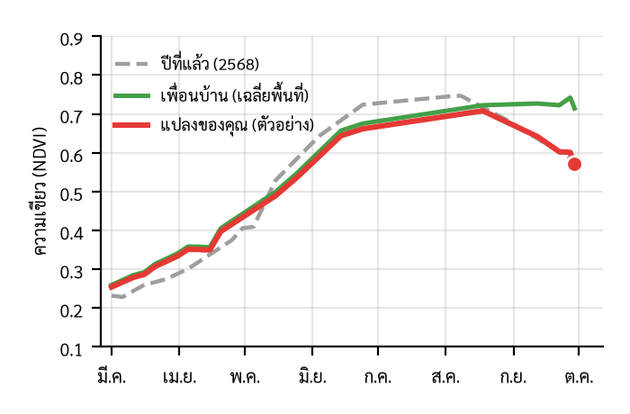

9:41
📶 🔋
MOCKUP · ข้อมูลตัวอย่าง
‹
ไร่หลังบ้าน
LIFF
12 ไร่ · อ้อยตอ 1 · ต.บ้านเม็ง อ.หนองเรือ
(ตัวอย่าง)
🔴 ควรไปดู
ภาพล่าสุด 29 ก.ย.
เขียวน้อยกว่าแปลงรอบ ๆ ประมาณ
1 ใน 5
เริ่มต่างตั้งแต่ปลาย ส.ค.
ปีนี้ vs เพื่อนบ้าน vs ปีที่แล้ว
แผนที่ในแปลง

เส้นเขียว/เทา = ค่าเฉลี่ยพิกเซลที่น่าจะเป็นอ้อยในกล่อง 1×1 กม. ใกล้ อ.หนองเรือ จาก Sentinel-2
(ข้อมูลจริง ปรับเรียบ)
· เส้นแดง =
แปลงสมมติเพื่อสาธิต
ค่าล่าสุด (29 ก.ย.)
แปลงของคุณ
0.57
ตัวอย่าง
เพื่อนบ้าน
0.71
ข้อมูลจริง*
ปีที่แล้ว ช่วงนี้
0.59
ข้อมูลจริง*
*ค่าเฉลี่ยพื้นที่ ไม่ใช่แปลงจริงของผู้ใช้ · ปีที่แล้วช่วงนี้มีภาพปลอดเมฆน้อย ค่าจึงไม่แน่นอน
ไปดูแปลงแล้ว?
🐛 หนอนกอ
🍃 ใบขาว
💧 ขาดน้ำ
✅ ปกติดี